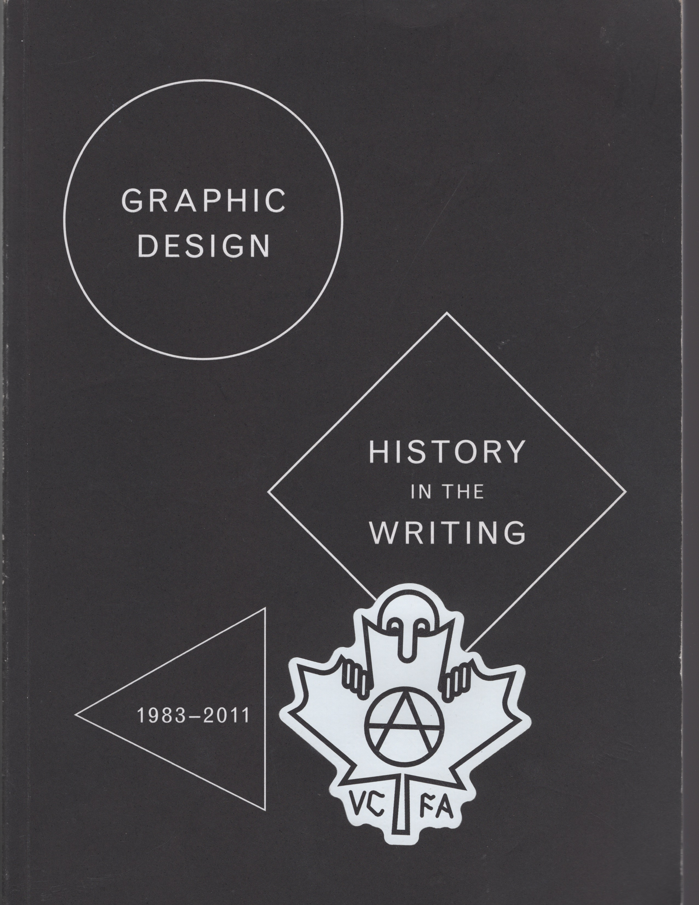
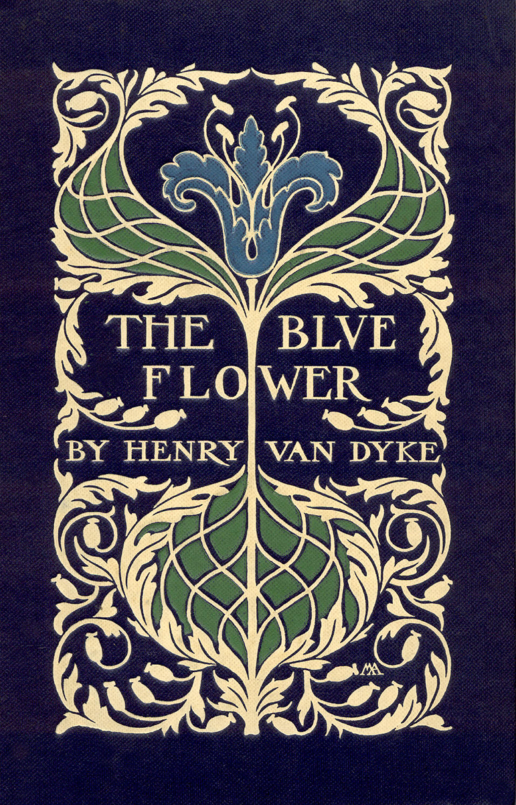
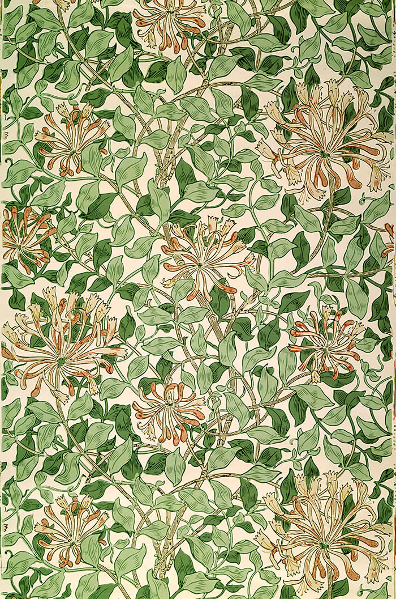
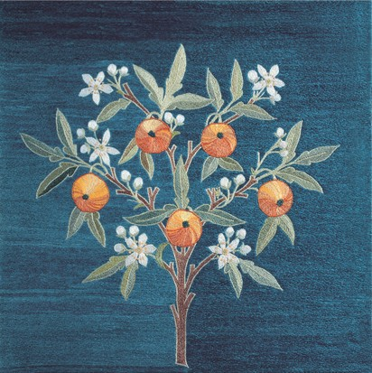
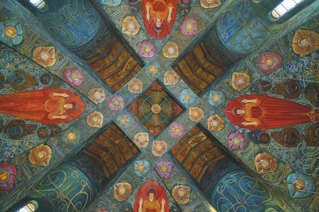

Martha Scotford says that in writing this essay she doesn’t wish to perpetuate a canon, only to show that one may exist, and that the one she provides may be a canon, not the canon, of graphic design.
She defines canon as a “basis for judgment; a standard; a criterion, an authoritative list.” For her study, she looked at five books on general graphic design history and then at the relative weight and importance that these books have placed on certain designers and words. Those five books are James Craig and Bruce Barton’s Thirty Centuries of Graphic Design (1987), Alan Ferm and Mildred Constantine’s Word and Image (1968) — a book of mostly posters, but Scotford points out that posters “have always been one of the most prominent and important media in graphic design and its history” — Steven Heller and Seymour Chwast’s Graphic Style: From Victorian to Postmodern (1988), Philip B. Meggs’ A History of Graphic Design (1983), and Josef Müller-Brockman’s A History of Visual Communication (1971).
Scotford then created a first round of criteria to observe appearances of designers and works that might point to the existence of a canon, then created 19 more categories to narrow down the list. After the list was edited, 63 designers and partners had made a “significant appearance in at least one category.” From this list, Scotford notes the “absolute lack of women,” and that “this might be a canon trap in itself.” I think so, Martha! Despite their low appearance and frequency, Scotford decided to include six out of 14 women designers with the highest frequency of reproduced works. I thought it was interesting how Scotford also studied the appearance of colored versus black and white reproductions, which Scotford assumes the reader will associate with higher and lesser significance.
Above all, eight designers led the numbers for appearances in the five books: Herbert Bayer, Afonse Mouron Cassandre, El Lissitzky, Herbert Matter, Laszlo Moholy-Nagy, Josef Müller-Brockmann, Henri de Toulouse Lautrec, and Piet Zwart. This canon is all male, all born before 1920, with several before 1900, all native Europeans, and one of them — Müller-Brockmann — was the author of one of the five books, but Scotford notes that “he has been approximately as generous to himself as was Meggs.”
The thing about creating a single canon is that it creates the idea that some designers and works are more important than others — the ones that have not been included. Naturally, as Scotford points out, this will limit the material that is discussed in graphic design history. As we enter a new era of design which aims to decolonize design history, the exclusion of women, non-white and non-European designers will no longer be ok. Additionally, since this essay has been written, I think other designers, including women have had the chance to live out their careers and would be more likely to be included in a repeated similar study; Gail Anderson and Ellen Lupton come to mind, and Scotford mentions Japanese designers Yusaku Kamekura (which Scotford spells Kamakura?), the subject of faculty member Ian Lynam’s lecture at VCFA in April 2020, and Tadanori Yokoo.
“Fewer names and works may make it easier to reach and learn and even to imitate, but reduces the rich, complex, and interrelated history that truly exists,” Scotford writes, and “The master/masterpiece approach also dismisses the existence (and possible importance) of anonymous works,” a huge part of graphic design origins. I remember an essay by Steven Heller in Barbara Glauber’s Lift and Separate about the early tendency to exclude the name of the designer in place of the designer’s employer. “These origins need not be a particular person to be appreciated and understood,” according to Scotford.
“For students new to the study of graphic design, a canon creates the impression that they need go no further; the best is known, the rest is not worth knowing. This is unfair, dangerous, and shortsighted.” I wish I had heard that quote back when I first started my MFA; I think this statement takes pressure off of the new student to learn the one, traditional version of graphic design history. I felt so intimidated when I started my MFA having no knowledge of Steven Heller or the Bauhaus, and now I know that that should’ve been no big deal because those things would come, and they weren’t the canon, only one part of it; the same journey that would lead me to the big names of graphic design history would also lead me to discover the flaws in the system and the system’s oppressive roots.
I think the tendency to treat the big names of graphic design history as divine is not best practice, and that’s what VCFA faculty were trying to say about learning graphic design history during my first residency, but I couldn’t quite wrap my head around that then. In the introduction to Parallel Narratives, an alternative, decolonizing approach to the documentation of design history, professors Natalia Ilyin and Elizabeth Patterson write that it is necessary to learn and acknowledge the way graphic design history was first recorded in order to move foward and create more diverse, inclusive histories.
In her 1994 essay Alms for Oblivion: The History of Women in Early American Graphic Design, Ellen Mazur Thomson cites Martha Scotford’s study which examined the major texts used to teach graphic design and found that they largely excluded women. Mazur recalls that Scotford left the reader with the idea that “cultural history, rather than art history, would provide a better model for historians to follow.” In an essay published in Eye 6 in 1992, Bridget Wilkins wrote that the linear style of art history used to build a canon of graphic design history “fails to go beyond narrations of lives, assessments of influence, and progressions of styles.”
Using Scotford’s suggestion, Mazur examines the cultural history surrounding women and their links to the newly forming field of graphic design as we know it today: “In describing women’s experiences in the printing industry, the advertising industry, and commercial illustration, one can show, however briefly, not only where women participated in graphic design but how their experience reveals the profession’s ties to other aspects of American culture.”
I was interested to read about the ties between women in all fields of design and women involved in fighting for voting rights. Mazur writes that the momentum of the women’s movement forced the nation to confront “the woman question.” I love that — the woman question. It makes us seem so threatening, like a pregnant volcano. In the second half of the nineteenth century, concurrent with the women’s movement, “the number of schools and colleges, including schools of fine and applied art open to women, increased dramatically.”
While it’s true that women were provided with more opportunities in art education as a result of the Aesthetic and Arts and Crafts movements, they were also encouraged to “work on domestic subjects and in a decorative style.” I found the influence of artistic movements on educational and professional opportunities for women super interesting and I take a closer look at the sexual division of labor in the early development of the design industry in the next section of this reader.
According to the University of Maryland, the defining characteristics of the Arts and Crafts movement are a “belief in craftsmanship which stresses the inherent beauty of the material, the importance of nature as inspiration, and the value of simplicity, utility, and beauty.” I sense ties to taste and beauty here and I think there are cultural links to the limitation of women’s professional opportunities. Mazur cites art historian Roger B. Stein who argued that “promoters of the Aesthetic theory encouraged upper-class women to pursue artistic interests, thereby diverting them from radical political activity,” and that the Arts and Crafts movement “reinforced patriarchal ideology as it opened opportunities for women in the arts.”
Virginia Perry in her encyclopedia The Employment of Women (1863), defined certain work as masculine and feminine. Women, in many examples provided by Mazur, were given opportunities to work with the justification that some vocations were inherently feminine: Perry said women were well-suited to copperplate engraving, used to produce business cards, calling cards, and invitations, because of their patience, careful attention to details, and the sedentary nature of the activity.
The opening of the first applied art school for women in the U.S., supported by the Franklin Institute, aimed to develop women’s “natural ability” as it related to their domestic life and to promote the “non-threatening” nature of this work. Wealthy philanthropist Sarah Peter who was behind the school’s opening said she hoped the school would “‘enlarge the sphere of the female occupation’ without endangering male employment or upsetting women’s tradition sphere: ‘I selected this department of industry, not only because it presents a wide field, as yet unoccupied by our country, but also because these arts can be practiced at home, without materially interfering with the routing of domestic duty, which is the peculiar province of women.’” The chairman of the Franklin Institute agreed: “‘Women are especially adept at decoration and this would not cause an economic problem: their quick perceptions of form and their delicacy of hand very especially fit them.”
This language seems so deeply linked to the work of Susan B. Anthony and Amelia Jenks Bloomer who “were allied with women trying to find jobs in the printing trades.” Mazur writes that the confrontations of these women and others with local and national printing unions “are well documented.” While jobs in the printing industry were described as suited to women, they were still male dominated, and workers “regarded themselves as a highly skilled and close fraternity, and their trade unionism developed early,” according to Mazur.
These all-male printing unions were another institutional challenge for women hoping to gain equality in the industry. Many printers did start to hire women under the guise of giving them an opportunity; however, women were paid less than male counterparts and often filled the abandoned positions created by ongoing strikes.
Because I grew up in Rochester, N.Y. and share geographic roots with Anthony, an abolitionist and champion of women’s rights, I’ve always felt drawn to her identity and work. I didn’t realize, however, that her suffrage work was deeply tied to women’s issues in the printing trade. She encouraged women to learn typesetting and take jobs with printers even during strikes; Mazur writes that this was in direct contrast with the opinion of other women’s rights leaders who held a need for worker solidarity. Founder of the Women’s Typographical Union No. 1 (WTU), Augusta Lewis was one of these people. She urged women to disregard non-union work and believed that “women would eventually find an equal place in union shops;” Lewis was the first woman admitted to the all-male United Typographical Union in 1870 and elected corresponding secretary, but later wrote, “‘We are ostracized in many offices because we are members of the union; and although the principle is right, disadvantages are so many that we cannot much longer hold together.’”
The rejection of women by trade unions had a lasting effect on gender representation in printing and design; most women who did surpass systematic challenges were upper-class. Two examples are book designer Margaret Neilson Armstrong and her sister Helen Maitland Armstrong, a stained glass artist; the sisters were born into a prominent New York family and chose to have careers in design.
Ellen Gates Starr is a good example linking the women’s movement and design. She established a bookbindery in the 1890s but according to Mazur, recognized the contradiction between fundamental social reform and the handicraft tradition. She eventually abandoned design for political activism, writing, ‘If I had thought it through, I would have realized that I would be using my hands to create books that only the rich could buy.’” I thought that was a powerful reason to abandon something, and this tells me that the fight for women’s equality in society and equality in design are closely related. Also connected are issues of literacy, social and economic status, and financial independence.
I had a thought halfway reading Sexual Division of Labour in the Arts and Crafts Movement by Anthea Callen in the 1984-1985 edition of Woman’s Art Journal: if I keep searching for fucked up things about gender inequality in design, I would continue to find them. The other thing that disturbed me was that I recognized the features of many of these seemingly “historic” problematic societal traps in our current world, and not just in issues of gender; I recognize them in other systemic injustices like race in America: an infuriating and flawed system that allows black men and women to be shot in their own beds and choked in their own neighborhoods, while their assailants who are supposed to be society’s protectors walk free.
The systems of power that oppress black people in this country and benefit white people slapped me hard in the face this year: the murders of George Floyd, Breonna Taylor, Elijah McClain, and the incident involving Christian Cooper, a black man who was falsely accused by a white woman of threatening her in Central Park: when the woman threatened to call the police and tell them that a black man was threatening her and her dog, she revealed that she knew how exactly our world operates: that in America, the police would unequivocally favor a white woman’s word over a black man’s. I don’t feel comfortable making a comparative transition between racism in America and Callen’s analysis of the sexual division of labor in the early development of the design industry because they’re both fucked up in their own ways, so I’ll just jump into this article.
The Arts and Crafts Movement was birthed with patriarchal motives; patterns that limited women within the movement were complex, loaded with layers, and were rooted in and reinforced a patriarchal ideology that aimed to define women’s sexuality and creative potential. There was a cultural shift during the rise of industry in Victorian society, 19th century England; households went from being the center of productive labor where women and children contributed to the family economy, to the opposite; the bourgeois family became the norm, as did the separation between home and workplace.
Post-shift, the ideal Victorian woman was spiritual, passive, a companion, and virtuous. I thought it was ironic that domesticity for women was viewed simultaneously as their sacred duty yet not real work. In this society, everything was measured in terms of financial profit (I don’t think much has changed) and because women’s work was not recognized or compensated, women were viewed as outsiders, according to Callen. When women did take work, it was usually in the home to fulfill a dual role and their wages were viewed as only supplementary to their husband’s; this created problems for single and widowed women. The nature of women’s work at home created feelings of physical and psychological isolation that kept women from participating in political organizations fighting for better pay and conditions. These patterns created a cheap labor force of women that “could be called in a dismissed on a whim.”
When the number of single and poor women became a nationwide issue, it became clear that appropriate work needed to be found. Callen wrote that the contamination of women in the male commercial world would be “avoided at all costs” and that while they increasingly found work, it was necessary to preserve the woman’s place as sacred within the family and the man’s place as authority. Art became a suitable solution. We’ve been here before: delicate hands, natural grace, instinctive taste. It was believed that women were innately all of these things, so it was natural that their art would be these things too. Art was seen as suitable work for women because it didn’t remove them from their home. But this soon created new problems for women in art: there was a distinction between “high” art or public art — male art — and domestic art, or female art. Rozsika Parker and Griselda Pollock in their book Old Mistresses first published in 1981, cite an example of the argued distinction between acceptable high art and dismissed domestic art: “‘[F]ine art is a public, professional activity. What women make, which is usually defined as “craft” could in fact be defined as “domestic art”... it has nothing to do with the inherent qualities of the object nor the gender of the maker.’” This language created by the elite made the audience of the art and the location where it was created, significant.
Gender, however, was the distinction between high art and domestic art. Appropriate trades for women, according to Callen, were ceramics, delicate wood carving, lace making, book illustration, bookbinding, and embroidery. Since I was interested in bookbinding at the time I read this essay, I was attracted to Callen’s commentary on women’s role within this trade. While women were found in bookbinding jobs, it was often only for certain steps in the project process, like the sewing part. The idea of women in the more advanced steps were thought to threaten “male jobs, male status, and male ‘family,’” which screams fragile masculinity. In bookbinding, Callen writes that the division of labor within was rooted in economics, but other trades chose to perpetuate the sexual division of labor. I mean, I think in every trade it’s a choice, but I see why she’s making this point.
The other trade that stood out to me was embroidery; Rozsika, in the article “The Word for Embroidery was WORK," published July 1975, wrote about the characteristics ascribed to both embroidery and women: they were seen as mindless, decorative, and delicate, “‘like the icing on the cake, good to look at, but devoid of significant content.’” As I was transcribing this quote into my notebook I laughed out loud when I looked up to finish the sentence: icing on the cake, good to look at…and oh just devoid of significant content.
As I finished this article, I started creating a mind map in my notebook, linking all of these categories that successfully held together and perpetuated an ever-complex oppressive system. There are ties to morality, perception, abuse, social status, language, isolation, treatment of middle-class versus working-class versus upper-class; much like dysfunctional systems we still have today, the categories surrounding the Arts and Crafts Movement worked hard in so many ways to control a particular set of people within a white-, male-dominated ideology.
As a recent discipline, graphic design might have been expected to adopt more egalitarian principles, but women in the industry are still excluded in traditional works of graphic design history. This is what Catherine de Smet argues in her 2009 essay “Pussy Galore and Buddha of the Future.”

“Indeed, even those women who seemingly complied in every way with the profile required for figuring in the textbooks have nonetheless been excluded,” de Smet writes. She cites as an example Muriel Cooper, co-founder of the Visible Language Workshop at MIT from 1973 until her death in 1994, as an early proponent of embracing computer technology in her curriculum; De Smet says that Cooper valued “high visual standards for the layout of information presented, and animated, on the screen.” Philip B. Meggs’ widely referenced book A History of Graphic Design has not included Cooper in any updated versions since its publication in 1983. A History of Graphic Design has been targeted in other essays I’ve read for its male- and euro-centric tendencies; I make a note here that Meggs’ book is haunting me.
I first read about Cooper in David Reinfurt’s book A *New* Program for Graphic Design, which I find to be a more readable and inclusive alternative to traditional texts like Meggs’.
I was glad that de Smet mentioned Cooper’s cover design for Learning from Las Vegas, a book written by Denise Scott Brown, Robert Venturi, and Steven Izenour — my previous advisor Sereina Rothenberger and I talked about Cooper’s design for the cover when I read Reinfurt last fall. The authors hated the design and thought it was too modernist for a book on postmodernist architecture and graphics throughout Las Vegas; they published a facsimile edition of the book in 2017.
Cooper practiced graphic design in the “spirit of collective work,” de Smet says, and “integrating Cooper into the pantheon of twentieth-century graphic design as a single individual, duly clarified according to the current criteria, would have betrayed the feminist cause, for which it is indispensable to call into question the tools used in the construction of history.” Here, I think of Augusta Lewis, founder of the Women’s Typographical Union No. 1 (WTU) in 1868, who advocated for women to disregard nonunion work and believed that “women would eventually find an equal place in union shops.” Her beliefs contrasted that of Susan B. Anthony’s who believed that women should accept any printing job if offered.
A number of essays I’ve read in this book, Graphic Design: History in the Writing 1983-2011, have criticized the act of describing designers as “pioneers,” “greats,” or in a biographical way. De Smet denounced herself for earlier in the essay describing Cooper as a “pioneer,” and cites Carma R. Gorman: “‘Describing an artist or a designer as a “pioneer” suggests (at least to me) a desire to position that person within a euro-centric, masculinist, modernist canon of greats.’” Essentially, the term perpetuates the traditions of graphic design history that promoted the identity and work of Anglo-American males while slighting the work of women and people of color. De Smet also cites Ellen Mazur Thompson who wrote, “To focus on the life of individual designers would appear to distort graphic design history.”
A revised narrative of graphic design history that aims to decentralize the white, male figure must also lead to “new attention brought to bear on what is happening in countries that have been less well served by historians, without forgetting that such countries may, like France, be located in the West.” I understand de Smet’s point about decentralizing existing norms, but I’m confused about what she means in the last part of that sentence. I think she’s saying that while concentrating on the graphic design history in France might be worthwhile because historians may have previously under-served the region (which seems hard to believe; is this true?), it still remains a part of the West which has seen enormous focus compared to countries in Africa, Asia, and South America.
For the people whose graphic design history has been excluded, like women, Sheila Levrant de Bretteville writes that ‘“women designers could only locate and solve design problems in a responsive way if they simultaneously studied their own history, tried to isolate female values and worked cooperatively.’” The font Pussy Galore, named for the heroine in the James Bond novel Goldfinger, was created in this spirit by Siân Cook, Liz McQuiston, and Teal Triggs, associated with the Women’s Design and Research Unit (WD + RU) in the UK. The font consists of pictograms, words, and expressions either isolated or grouped together that tap into the semantic levels accessed on a keyboard. However, I don’t think Levrant de Bretteville’s philosophy should be exclusive to women, but to anyone slighted by conventional graphic design history.
T.H. Barrett, an Eastern historian, has devoted study to the Chinese empress Wu. He says that Wu, who chose to be called “Iron Lady,” “Wise Mother,” “Emperor,” or “Buddha of the Future,” may have discovered printing seven centuries before Gutenberg, putting into question Western knowledge about the origins of mechanical reproduction of text. Gutenberg’s discovery of the printing press has been standard for students in the West and Barrett’s work is a testimony to how far we have to go in creating inclusive texts for graphic design history.
This month I read a series of tweets that reminded me of the oppressive systems that have tainted the real graphic design history, and continue to taint the industry that shares it: graphic design education. The tweets are from former RISD Adjunct Professor Clara Lieu who wrote that she would be leaving the school after 16 years, after applying each year to several full-time, tenured positions at the school and watching the opportunities “evaporate.” She wrote, “On the rare occasion (twice) that I got a first interview, I never made it past the first round. After a while it became clear that my ships were sailing; the people getting the positions much younger, with less experience and an exhibition history that was 1/10 of what I had.”
Lieu spoke about the “hollow publicity campaigns” created by schools that say that they know there is a lack of diversity on faculty and that they are trying to fix the problem. In the tweet thread, she shared her doubts: “"Clara, you're leaving academia because you couldn't make it. You're not good enough, because if you were, you would have gotten a full-time position by now.’" Of course the voice in her head is a result of the oppressive structure in which she was occupied for the better part of two decades. “I've made peace with my struggles in academia. I had to, it was a survival mechanism because I needed the work to support my family. 99% of the time I can ignore that voice in my head. But it's still there, and it haunts me from time to time.”